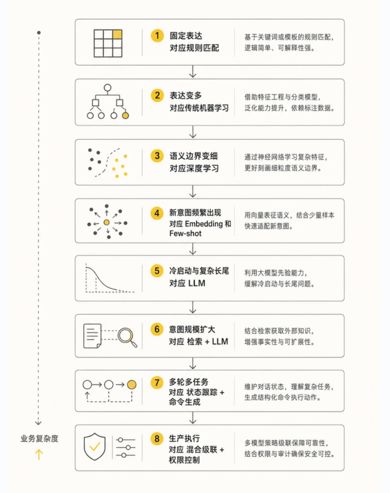
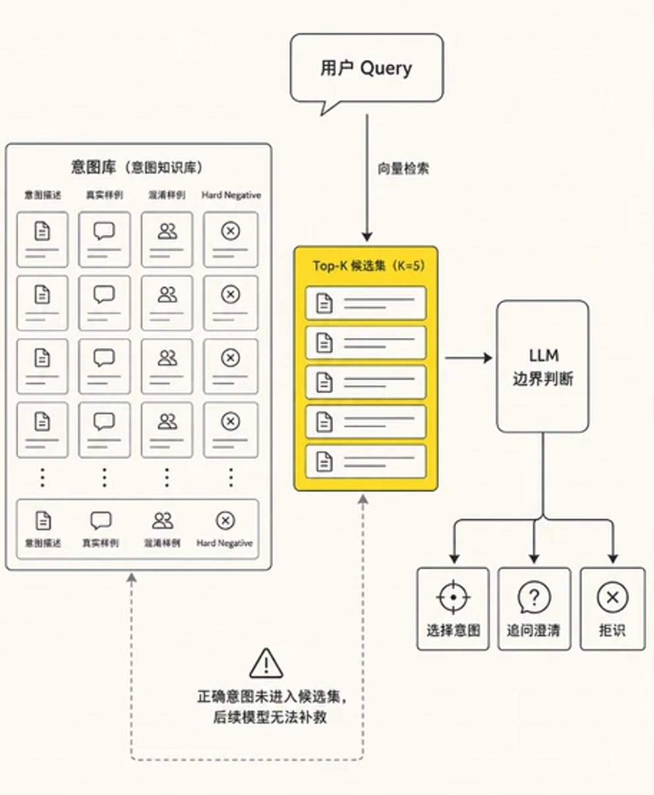
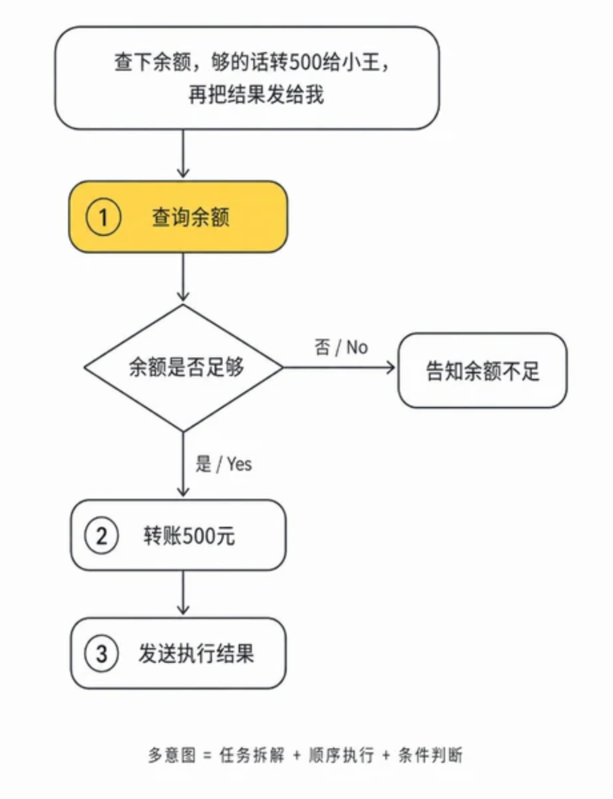
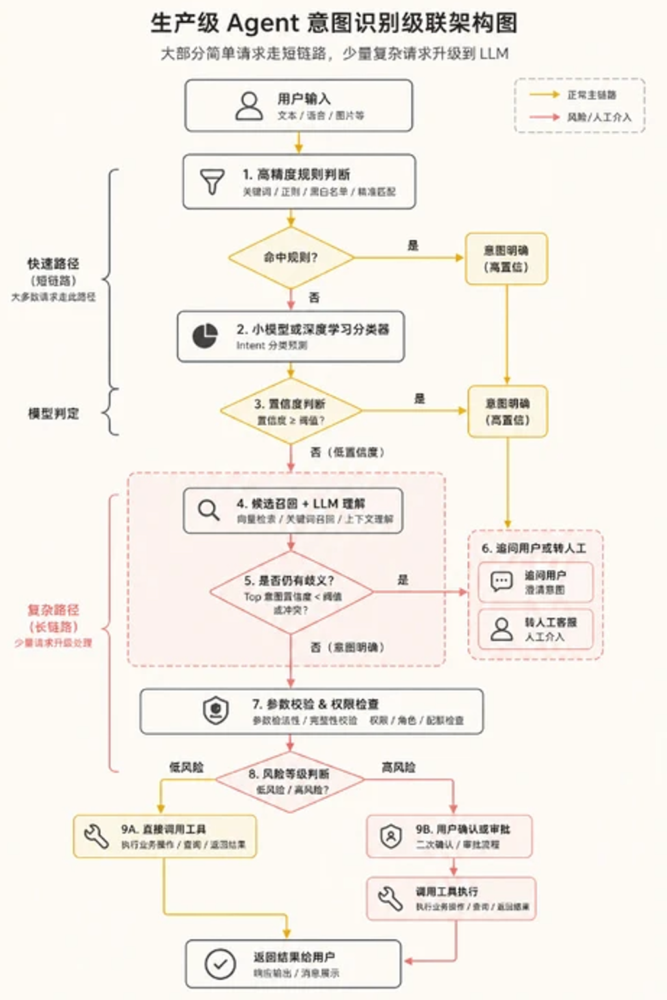

Datawhale干货
作者：陈思州，Datawhale成员
很多人设计 Agent 意图识别，会从 Prompt、Few-Shot 或 RAG 开始。把时间线拉长后会发现，这项技术有一条清晰的演进路径：最早识别用户说了哪个关键词，后来判断一句话属于哪种业务类型，如今还需要结合多轮上下文，推断用户准备推进什么任务。
这条路径由业务复杂度推动。表达越来越口语化，意图标签持续增加，对话上下文不断变长，系统还要处理意图切换、多任务组合、参数缺失和执行风险。选型之前可以先回答四个问题：意图数量有多少、标签是否频繁变化、标注数据是否充足、一次判断需要理解多少轮上下文。答案基本决定了技术路线。

一、规则和分类器，先接住确定的请求
业务刚启动时，规则通常最实用。例如出现"退款""取消订单""修改地址"便路由到对应流程。规则几乎没有推理成本，结果可解释，也方便产品和运营直接调整，因此适合高频、确定、风险敏感的请求。它的边界同样明显：用户可能说"这个我不想要了""地址填错了"，还可能同时提到退款和物流。规则数量增加后，冲突、优先级和维护成本也会快速上升。所以规则适合守住最确定的一部分流量，其余表达交给统计模型处理。
当意图标签相对稳定，同时积累了一批标注语料，可以使用 TF-IDF、FastText 等文本表示，再结合逻辑回归、SVM 或轻量神经网络完成分类。这类方案训练快、推理成本低，适合客服分流、工单归类、FAQ 路由等高并发场景。它依赖历史数据学习决策边界，因此需要关注类别不均衡、线上新表达和相邻意图混淆。离线准确率很高，仍可能在促销、新产品或新政策上线后快速下降。
随着表达复杂度提高，CNN、LSTM、BERT 一类深度学习模型开始发挥作用。预训练模型能够理解词序和上下文，同一句"我要退了"出现在商品、机票和会员服务中，可以得到不同表示。此时还能把意图分类与槽位抽取联合训练，一次得到 intent=book_flight、departure=杭州、destination=北京、date=周五。这种方案适合标签稳定、数据充足、线上流量较大的业务，代价是标注、训练和版本管理成本更高；标签调整后，通常还要补数据并重新训练。
业务进入冷启动阶段时，问题会发生变化：标签已经定义好，每个标签却只有少量样本。Embedding、原型网络和对比学习更适合这种情况。它们通过向量空间描述类别关系，让同类表达靠近，让不同意图逐渐分开。新意图上线时，只要准备少量示例即可参与召回，扩展速度会快很多。
这里要注意，语言相似与业务动作并不总是一致。"怎么取消订单"和"为什么订单被取消"在向量空间里可能非常接近，后续动作却完全不同。因此，Embedding 更适合召回几个候选意图，最终判断再由分类器或 LLM 完成。
二、意图变多，就先缩小范围再判断
LLM 进一步降低了意图系统的冷启动门槛。我们可以在 Prompt 中写明业务意图、判断边界、正反案例和输出结构，让模型直接返回意图、槽位、置信信息以及是否需要追问。它对口语、省略、情绪表达和少样本意图的适应能力更强，也适合意图频繁调整的 Agent 产品。
当意图数量逐渐增加，把全部定义和案例都塞进 Prompt，会带来上下文膨胀、标签混淆、成本增加和维护困难。系统由此自然演进到"先缩小范围，再完成判断"的两阶段架构。
意图 RAG 的核心价值就在于缩小决策空间。系统先用当前请求召回最相关的意图定义、边界案例和混淆反例，再让 LLM 在这些候选中判断。原本从几十个意图里选择一个，现在可能只需要比较三到五个候选，Prompt 更短，边界也更集中。

这套架构需要分别评估召回层和判断层。目标意图没有进入 Top-K，后面的 LLM 很难补救；目标已经召回却选择错误，说明问题更可能出在意图边界、案例质量或判断提示词。把两个环节拆开评估，才能快速定位系统误差。
意图库也需要覆盖真实线上分布。除了标准定义，还应收录口语表达、相邻意图、混淆反例、业务前置条件以及历史误判。LLM 批量生成的同义句可以补充长尾表达，线上真实请求仍然是更新意图库最重要的数据来源。
三、多轮对话里，要判断的是状态不是一句话
当业务进入多轮对话后，上下文会成为新的主变量。用户说"换成明天吧"，单看这一句话无法判断他准备修改机票、酒店还是日程。系统需要把历史对话整理成结构化状态，例如当前任务、已确认槽位、待补槽位、上一步工具结果和最近一次用户修正，再结合最新输入完成判断。
这时可以将识别目标设计为一次状态更新：
{"active_intent": "modify_flight","intent_transition": "continue","slot_updates": {"departure_date": "明天"},"missing_slots": [],"next_action": "confirm_change"}
模型需要判断当前意图是否延续、切换、取消或完成，同时识别用户修正了哪些参数。这样，Agent 能够围绕流程状态理解用户，减少旧意图残留对新任务的干扰。

继续扩大到复杂 Agent，用户的一句话还可能包含多个意图。例如："查一下余额，超过一万就转五千到储蓄卡。"这里包含余额查询、条件判断和转账任务，三个动作之间还有明确依赖关系。单标签分类会丢失任务结构，更合适的输出形式是命令序列或执行图：
到了这一阶段，意图识别已经逐渐扩展为语义解析、任务拆解和规划。模型既要理解用户目标，也要确定动作顺序、参数依赖和需要确认的高风险步骤。
生产环境通常会采用级联架构，让不同方法各自处理擅长的流量：规则处理确定性命令和安全拦截，轻量分类器覆盖稳定高频意图，Embedding 负责候选召回，LLM 处理模糊表达、多轮状态和长尾请求，RAG 动态提供业务定义与案例，规划器负责多任务拆解。每一层还要保留拒识、追问和升级通道。

这种级联还有一个重要收益：系统可以根据请求难度分配计算成本。简单请求走短链路，复杂请求再升级到更强模型。每层都能单独监控、替换和回滚，意图新增时也只需要调整相关分支。
识别完成后，还要单独处理权限与执行安全。意图层回答"用户想做什么"，权限层判断"用户能否这样做"，执行层确认"动作是否应该立即发生"。查询天气可以直接执行，删除数据、转账和发送外部消息通常需要身份校验或二次确认。这三个层次分开设计，能够避免模型把"理解成功"误当成"授权完成"。
因此，一个完整的意图系统需要提供四类出口：执行、追问、拒识和确认。缺少信息时追问，置信不足时拒识，高风险动作进入确认流程，只有条件充分且权限通过后才调用工具。
评估时也需要超越整体 Accuracy。类别不均衡场景更适合观察 Macro-F1；相邻意图需要维护混淆矩阵；Embedding 层关注 Recall@K；槽位抽取关注字段级 F1；多轮场景关注意图切换和状态更新准确率；生产环境还要观察拒识率、追问率、工具调用成功率、端到端任务完成率、延迟和单次请求成本。
一个成熟的意图系统，需要判断何时直接行动、何时升级模型、何时停下来追问。系统能力越强，对"不确定性"的管理也应该越精细。
整条演进脉络可以归结为更清晰的系统分工：规则负责确定性，分类器负责高频稳定流量，Embedding 负责缩小候选空间，LLM 负责复杂语义，RAG 负责动态业务知识，多轮状态负责上下文连续性，规划器负责把复合目标转成可执行步骤。
意图识别做得好，靠的通常是这套分工能够随着业务复杂度持续升级。